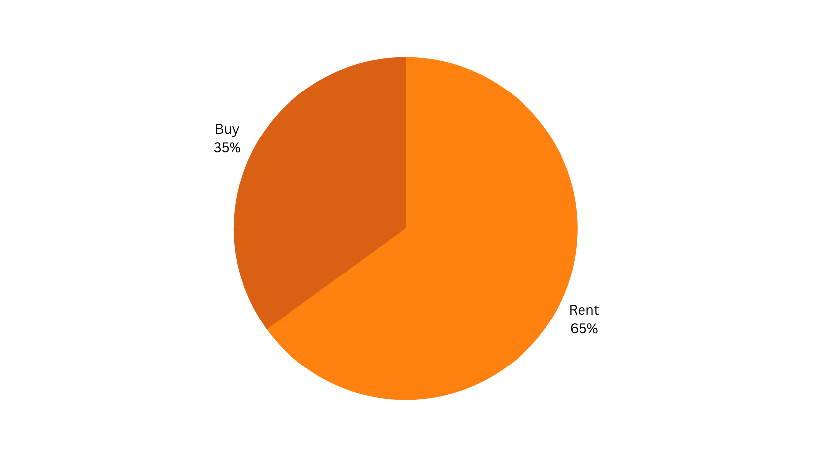

< Back
Flent.
Rent furniture, Appliances & Electronics at affordable prices.
Designed the user experience and interface for the dummy project, Flent
rental services app. Conducted extensive user research to inform the
design decisions and improve the overall user experience. Developed a
basic design system that established consistency and improved usability.
Designed a platform that allows users to rent furniture, appliances, and
electronics at affordable prices.
The Problem
The challenge facing individuals who frequently relocate, such as
bachelors, paying guests, and working professionals, is the high cost
and uncertainty of staying in a place, which discourages them from
buying furniture, electronics, and appliances. These individuals require
furniture for relatively short periods of time, but are unable to find
affordable and convenient rental options.
The Solution
Flent provides a platform that allows individuals to rent furniture,
electronics, and appliances for whatever period they require, whether it
be a week, a month, or a year. Flent aims to make the rental process
easy and accessible, while also promoting sustainability through the
provision of refurbished and recycled items. The problem that Flent aims
to solve is the lack of affordable and convenient rental options for
individuals in need of furniture, electronics, and appliances for short
periods of time.
Qualitative Research
I conducted individual interviews with 7-8 users to understand their
furniture purchasing behaviors and decision-making processes.
The objective of the qualitative research was to gain a deeper
understanding of the users problems and needs when it comes to
purchasing furniture, electronics, and appliances. The interviews were
structured to cover the following areas:
- Furniture purchasing behaviors
- Considerations when purchasing furniture
- Challenges faced during the purchasing process
I used open-ended questions to encourage the participants to share
their experiences and opinions in detail.
-
What are your views about renting a refurbished item like
furniture/appliance/electronics?
- Have you ever used any renting apps before the above product?
- How many online renting apps have you seen or been using?
- What factors do you look for when you rent an item?
-
What other products would you prefer to rent rather than furniture,
appliance and electronics?
Quantative Research
I conducted an online survey to collect data from a larger group of
users. The survey consisted of a set of structured questions and a few
random questions based on the participants' willingness to answer.
The objective of the quantitative research was to gather data on
users' online renting thinking, their habits and preferences when it
comes to purchasing furniture, electronics, and appliances. The survey
covered the following areas:
- Awareness of online furniture rental services.
- Previous experience with online furniture rental services.
-
Factors considered when renting furniture, electronics, and
appliances.
- Expectations from a furniture rental service.
Where Are you Staying?
Which product do you prefer to rent?
Would you prefer renting an item on a weekly basis rather
monthly/yearly basis?
Would you rather rent a product than buy one?

What is the budget you prefer for renting items like furniture,
appliance, and electronics?
User Persona
I created User Personas to represent the main target segments of users
who would be interested in our service. These personas included
demographics, pain points, needs, goals, and behaviors that were
commonly shared among the users. The personas were created to help us
better understand the user's perspective and to make design decisions
that are user-centric.
Prateek
Bio
Prateek is a driven individual with a passion for
problem-solving and exploring new experiences. As a student at
the Indian Institute of Information Technology, Nagpur, he is
constantly seeking new challenges to take on and grow his skill
set. Living as a paying guest in Nagpur city, Prateek has faced
the difficulty of bringing furniture from his native place and
has realized the need for a more budget-friendly solution. While
searching for furniture rental services, he came across a few
apps but was disappointed to find that the monthly charges were
too high for his budget. This led him to seek a platform that
offers good quality furniture at an affordable cost, with
excellent service. Prateek's needs and experiences serve as an
inspiration for creating a better solution in the furniture
rental market.
Goals
-
Ease of Use:
Prateek wants a platform with a user-friendly interface that
is easy to navigate and understand.
-
Timely Delivery:
He places a high value on timely delivery, and wants a
platform that delivers his purchases on time.
-
Customer Satisfaction:
Prateek wants a platform that prioritizes customer
satisfaction and provides an overall positive experience.
-
Affordable Cost:
Being on a budget, Prateek is looking for a platform that
offers furniture rental services at an affordable price.
-
Maintenance-Free:
Prateek wants a platform that provides free maintenance and
repair services to ensure his furniture is always in good
condition.
Pain points of prateek
- Exorbitant Prices.
- Inefficient Delivery & Pick-up Scheduling.
- Poor Customer Service.
- Limited Product Selection.
- Inadequate Ability to Evaluate Product Quality.
Aditi
Bio
Aditi is a homemaker who recently moved to Bangalore with her
husband. She enjoys cooking and living a carefree life, but has
faced a challenge with setting up her new home in a rented
space. With limited resources, she is looking for a convenient
and cost-effective solution for her furniture and appliance
needs. Aditi wants to explore the option of renting these items
through an app that provides easy access to a wide range of
products. She wants the experience to be hassle-free and the
delivery and pick up to be prompt.
Goals
-
Variety of products:
Aditi wants to have access to a wide range of products that
she can rent to fulfill her needs. She wants to have the
option to choose from different products to ensure that she
finds what she is looking for.
-
Less cost:
Aditi wants to minimize the costs associated with renting
items. She wants an app that offers reasonable prices for
renting the items she needs.
-
Easy Delivery:
Aditi wants to ensure that the app offers quick and easy
delivery of the items she rents. She wants to receive the
items in a timely manner to avoid any inconvenience.
-
Get Offers and Discounts:
Aditi wants to take advantage of any offers and discounts
available on the app. She wants to find ways to reduce the
costs associated with renting items and save money in the
process.
Pain points of Aditi
- High Deposit Cost.
- Unclear Product Status.
- Product Availability.
- Space occupied by the rented items.